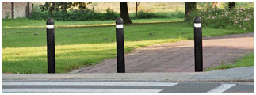
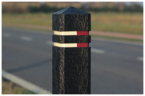
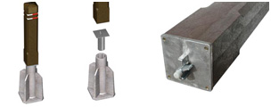

Les piquets anti parking présentent l’avantage de garder leur couleur avec le temps, sans entretien avec des produits polluants. Ils sont inaltérables, contrairement au bois.
Piquets ronds à tête arrondie (en noir) Ø 13,5 x 145 cm
Piquets carrés de 15 x 15 x 140 cm en noir ou brun
Piquets amovibles